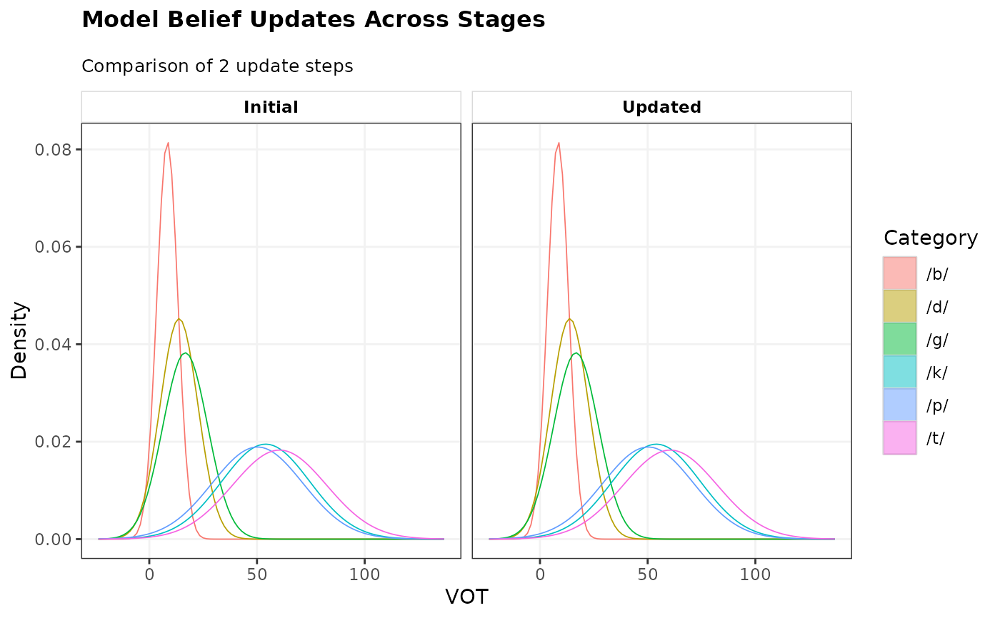

Plot model belief updates across sequence steps or prior-to-posterior transitions
Source:R/S7-generics.R, R/S7-plot-methods.R
plot_model_updates.RdVisualizes how category representations or decision surfaces evolve across update
steps (for sequential model lists / update_template() outputs) or across MCMC
prior-to-posterior transitions (for MVBU_Stanfit objects).
Usage
plot_model_updates(
x,
what = c("categories", "categorization_functions"),
groups = NULL,
step_labels = NULL,
cues = NULL,
categories = NULL,
aes = NULL,
levels = NULL,
limits = NULL,
resolution = 100,
ncol = NULL,
...
)
## S7 method for class <list>
plot_model_updates(
x,
what = c("categories", "categorization_functions"),
groups = NULL,
step_labels = NULL,
cues = NULL,
categories = NULL,
aes = NULL,
levels = NULL,
limits = NULL,
resolution = 100,
ncol = NULL,
...
)
## S7 method for class <MVBU_Stanfit>
plot_model_updates(
x,
what = c("categories", "categorization_functions"),
groups = NULL,
step_labels = NULL,
cues = NULL,
categories = NULL,
aes = NULL,
levels = NULL,
limits = NULL,
resolution = 100,
ncol = NULL,
...
)Arguments
- x
A list of S7 cognitive models/templates or an
MVBU_Stanfitobject.- what
Character string indicating what to plot:
"categories"(default) or"categorization_functions".- groups
Optional character vector of group names to plot for
MVBU_Stanfit.- step_labels
Optional character vector of names or labels for each update step.
- cues
Optional character vector of cue names to plot.
- categories
Optional character vector of category names to plot.
- aes
Plot aesthetic (e.g.
"contour","fill-gradient").- levels
Numeric vector of probability / density levels to plot.
- limits
Optional named list or numeric vector of plot axis limits.
- resolution
Integer grid resolution for continuous cue dimensions. Defaults to
100.- ncol
Integer number of facet columns. Defaults to
NULL.- ...
Additional arguments passed to methods.
Examples
m1 <- example_mvg_ideal_observer()
m2 <- example_mvg_ideal_observer()
plot_model_updates(list("Initial" = m1, "Updated" = m2), what = "categories")
